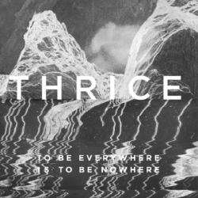
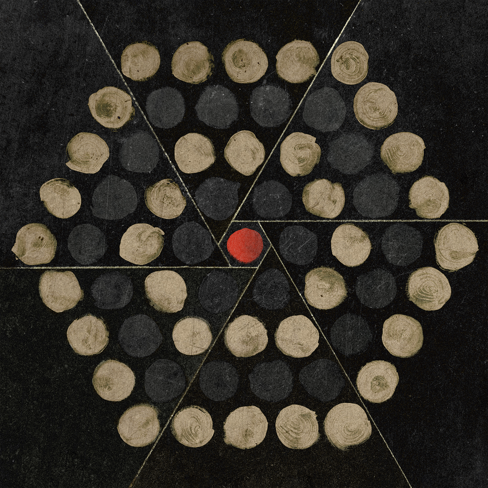

Introduction
Brain-Flak is a Turing Tarpit created by a friend of mine.
As a Turing tarpit, in theory this language in Turing-complete but in practice is a huge pain to actually do anything in.
I've created an interpreter for Brain-Flak written in JavaScript, hosted here with a brief explanation and overview of the language. Go here for the interpreter.
Structure
The data storage in Brain-Flak is a grand total of two stacks. One stack is marked as the active at a time, but the active stack can swap during runtime.
The stacks are each theoretically infinite and capable of holding an arbitrary precision signed integer. In practice, interpreters obviously aren't capable of that, but this is a requirement for Turing-completeness.
Commands
Brain-Flak has a total of 8 characters in its syntax: ()[]{}<>. They form a total of 8 possible commands: 4 possible nilads (commands with no arguments), and 4 possible monads (commands with one argument).
| Command | Effect |
|---|---|
() |
Evaluates to 1 (does not push to stack, merely evaluates). |
[] |
Evaluates to the height of the current stack. |
{} |
Evaluates to the current value on the top of the active stack, popping it in the progress. |
<> |
Toggles the active stack, and evaluates to 0. |
(n) |
Pushes n to the active stack. |
[n] |
Evaluates to negative n. |
{foo} |
Loops, executing whatever is between the opening and closing brace, until the top of the stack reaches 0 by any means. |
<foo> |
Executes whatever is between the opening and closing angle brackets, but always evaluates to 0. For example, () evaluates to 1 but <()> evaluates to 0. |
The presence of other commands in a Brain-Flak program is undefined behavior, but is commonly treated as either a no-op or as invalid command. It's common for spaces and newlines to be no-ops either way.
Similarly, there is no actual way to comment your Brain-Flak code according to the specification. Various interpreters have used single-line comments starting with a # and ending with a newline, or block-quote comments beginning and ending with hashmarks, or other options.
Music
This song was playing on loop while the author drafted the first version of this language, reportedly. DJ has stated as such on Discord before.
The song is "Black Honey" by Thrice, from the album "To Be Everywhere Is To Be Nowhere".
My personal favorite album by them is Palms.
